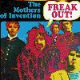
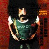
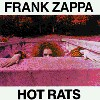
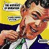
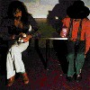
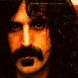
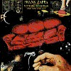
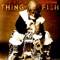

strange music page
overseas * * * frank zappa
#ザッパです、もう死んじゃいましたけど。すべてのアバンギャルド系のミュージシャンの源かも。偉大な人でした。えーと、高校の頃の先輩にLive in N.Y.を貸してもらってはまりました。おっぱいとビールとか大好きでした。
関係無いけど、うちの近所に"freak out"というメシ屋さんがあります。ザッパ聴きながら昼飯が食えます。元住に住んでて良かった。
沢山アルバム有って、もちろん全部なんて聴いてないんですけど、私が好きなのは "HOT RATS" みたいなジャズロック路線みたいです。Ian Underwoodがいた頃が好きみたい。
www.zappa.com
|
- Frank Zappa & Mothers of Invention (1966-1970)
- Mothers (1970-1972)
- Frank Zappa Band (1975-1979)
- Frank Zappa Band (1981-1983)
- Shut Up'N Play Yer Guitar (黙ってギターを弾いてくれ)
- Tinsel Town Rebellion
- You Are What You Is
- Shitp Arriving Too Late To Save A Drowing Witch (辿り着くのが遅すぎて魔女を救えなかった船)
- The Man From Utopia (ハエハエカカカザッパッパ)
- Baby Snakes
- Frank Zappa Band (1983-1986)
- London Symphony Orchestra vol.I & II
- Boulez Conducts Zappa/The Perfect Stranger
- Francesco Zappa
- Them Or Us
- Thing Fish
- Meets The Mothers Of Prevention
- Does Humor Belong In Music ?
- Jazz From Hell
- Frank Zappa Band (1988-1993)
- Guitar
- Broadway The Hard Way
- The Best Band You Never Heard In Your Life
- Make A Jazz Noise Here
- Playground Psychotics
- Ahead Of Their Time
- The Yellow Shark
|

- Hungry Freaks, Daddy
- I ain't Got No Heart
- Who Are The Brain Police
- Go Cry on Somebody Else's Shoulder
- Motherly Love
- How Could I Be Such A Fool
- Wowie Zowie
- You didn't Try to Call Me
- Any Way The Wind Blows
- I'm not Satisfied
- You're Probably Wondering Why I'm Here
- Trouble Every Day
- Help I'm A Rock
- The Return of The Son of Monster Magnet
- Frank Zappa (guitars,vocals)
- Ray Collins (vocals,harmonica,tambourine)
- Jim Black (drums)
- Roy Estrada (bass,guitars)
- Elliot Ingber (rhythm guitars)

- Are You Hung Up ?
- Who Needs The Peace Corps ?
- Concentration Moon
- Mom & Dad
- Telephone Conversation
- Bow Tie Daddy
- Harry, You're A Beast
- What's The Ugliest Part of Your Body
- Absolutely Free
- Flower Punk
- Hot Poop
- Nasal Retentive Calliope Music
- Let's Make The Water Turn Black
- The Idiot Bastard Son
- Lonely Little Girl
- Take Your Clothes Off When You Dance
- What's The Ugliest Part of Your Bory (reprise)
- Mother People
- The Chrome Plated Megaphone of Destiny
- Lumpy Gravy I
- Lumpy Gravy II
We're Only In It For The Money:
- Frank Zappa (guitars,piano,vocals,edit)
- Billy Mundi (drums,vocals)
- Bunk Gardner (woodwinds)
- Roy Estrada (bass,vocals)
- Jimmy Carl Black (drums,trumpet,vocals)
- Ian Underwood (piano,woodwind)
RYCODISC: RCD-40024 (original released in 1967,1968)
#有名な一枚、ジャケットもかっちょいいですね。
2枚目の"UNCLE MEAT Film Excerpt"は会話ばっかしで、ちょっとしんどいですかね。
"KING KONG"シリーズはジャズロックとしてとてもかっこいいです。
ちょっと気に入ってる曲が有ってDISC-Iの21曲目"Project X"なんですけど、とても奇麗なアコギににとてもザッパらしいヴィブラフォンの旋律が入る曲の前半、なんかとても意外に奇麗な曲。後半アバンギャルドになっちゃうけど。
でも2枚組の割には聴き所っていうか、かっこいい部分が少ないかな？ "KING KONG"だけでアルバムにしてもいいのに。

DISC-I
- Uncle Meat: Main Title Theme
- The Voice of Cheese
- Nine Types of Industorial Pollution
- Zolar Czakl
- Dog Breath, In The Year Of The Plague
- The Legend of The Golden Arches
- Louie Louie (At the Royal Albert Hall in London)
- The Dog Breath Variations
- Sleeping in A Jar
- Our Bizarre Relationship
- The Uncle Meat Variations
- Electric Aunt Jemima
- Prelude to King Kong
- God Bless America (Live at the Whisky A Go Go)
- A Pound for A Brown on The Bus
- Ian Underwood Whips It Out (Live on stage in Copenhagen)
- Mr.Green Genes
- We Can Shoot You
- "If We'd All Been Living in California..."
- The Air
- Project X
- Cruising for Burgers
DISC-II
- Uncle Meat Film Excerpt Part I
- Tengo Na Minchia Tanta
- Uncle Meat Film Excerpt Part II
- King Kong Itself
- King Kong II
- King Kong III
- King Kong IV
- King Kong V
- King Kong VI
- Frank Zappa (guitars,percussions,low grade vocals)
- Ray Collins (swell vocals)
- Jimmy Carl Black (drums,droll humor,poverty)
- Don Preston (electric piano,tarot cards,brown rice)
- Billy Mundi (drums)
- Bunk Gardner (piccolo,flute,clarinet,saxes,bassoon)
- Ian Underwood (organ,piano,harpsichord,celeste,flute,clarinet,saxes)
- Artie Tripp (drums,timpani,vibes,marimba,xylophone,wood blocks,bells,chimes)
- Euclid James Sherwood
- Ruth Komanoff (marimba,vibes)
- Nelcy Walker (soprano voice)
RYCODISC: RCD-10064/10065 (original release 1969)
#武蔵小杉駅前中古屋.....\300で回収してきました。安すぎっす、いーんでしょうか？こんなCDをこんな値段で。
1969年のCDですね。イギリスで"King Crimson/In The Court of Crimson King"を抜かしてチャートの1位になったアルバムとか。
このアルバムは完全にJazz Rockですね、I.Underwoodがsaxにkeyboardsに大活躍してます。マヂ格好良いです、30年前のアルバムだすけど。(1999.9.19)

- Peaches En Regalia
- Willie The Pimp
- Son Of Mr.Green Genes
- Little Umbrellas
- The Gumbo Variations
- It Must Be A Camel
- Frank Zappa (guitars,bass,perucssions)
- Ian Underwood (piano,organs,clarinet,sax)
- Captain Beefheart (vocals on 2.)
- Sugar Cane Harris (violin on 2.5.)
- Jean Luc-Ponty (violin on 6.)
- John Guerin (drums on 2.4.6.)
- Paul Humphrey (drums on 3.5.)
- Ron Selico (drums on 1.)
- Max Bennett (bass on 2.3.4.5.6.)
- Shuggy Otis (bass on 1.)
RYCODISC: RCD-10066 (original release 1969)
#邦題、
いたち野郎。です。素晴らしくジャケット見たまま邦題(そのまま訳すと「いたちが私の皮を剥ぐ」かな？)良いタイトルですよね、少なくとも
ハエハエカカカザッパッパよりは。
えーと"The Mothers of Invention"名義では最後の作品になります、洗練されてない混沌の魅力みたいなのが有るよーな感じがします。ダサイのとかイケテないの部分も包括して、バンドっぽい作品かなと。
最後の曲は(タイトル曲だけど)グシャグシャの音の塊、よくこんなの入れたなーという。一瞬CDプレイヤー壊れたかと思いました。

- Didja Get Any Onya?
- Directly From My Heart To You (心から)
- Prelude To The Afternoon Of A Sexually Aroused Gas Mask
- Toads Of The Short Forest (森のひきがえる)
- Get A Little (いただき!)
- The Eric Dolphy Memorial Barbecue
- Dwarf Nebula Processional March & Dwarf Nebula
- My Guitar Wants To Kill Your Mama (ギターでおふくろを殺してやりてぇ)
- Oh No
- The Orange County Lumber Truck
- Weasels Ripped My Flesh (いたち野郎)
- Frank Zappa (gutiars,vocals)
- Ian Underwood (alto sax)
- Bunk Gardner (tenor sax)
- Motherhad Sherwood (baritone sax,snorks)
- Buzz Gardner (trumpet,flugel horn)
- Roy Estrada (bass)(vocals on 3.)
- Jimmy Carl Black (drums)
- Art Tripp (drums)
- Don Preston (piano,organ,electronic effects)
- Ray Collins (vocals on 9.)
- Don Harris (eletric violin,vocals on 2.)
- Lowell Geroge (rhythm guitar,vocals on 1.)
RYCODISC: RCD-10163 (origian release 1970)

- Debra Kadabra
- Carolina Headcore Ecstasy
- Sam With The Showing Scalp Flat Top
- Poofter's From Wyoming Plans Ahead
- 200 Years Old
- Cucamonga
- Advance Romance
- Man With The Woman Head
- Muffin Man
- Frank Zappa (guitars,vocals)
- Captain Beefheart (harp,vocals)
- George Duke (keyboards,vocals)
- Napoleon Murphy Brock (sax,vocals)
- Bruce Fowler (trombone)
- Tom Fowler (bass)
- Denny Walley (slide guitar)
- Terry Bozzio (drums)
- Chester Thompson (drums on 5.)
- Big Swifty
- Your Mouth
- It Just Might Be A One-Shot Deal
- Waka/Jawaka
- Frank Zappa (guitars,percussions)
- Tony Duran (slide guitar)
- George Duke (electric piano)
- Sal Marquez (trumpet,chimes)
- Erroneous (bass)
- Aynsley Dunbar (drums)
- Chris Peterson (vocals on 2.)
- Joel Peskin (tenor sax on 2.)
- Mike Aitschul (baritone sax,piccolo on 2.4.)
- Jeff Simmons (hawaiian guitar,vocals on 3.)
- Sneaky Pete Kleinow (pedal steel on 3.)
- Janet Ferguson (vocals on 3.)
- Don Preston (piano,mini-moog on 4.)
- Bill Byers (trombone,baritone horn on 4.)
- Ken Shroyer (trombone,baritone horn on 4.)
RYKODISC: RCD-10516 (original release 1972)

- Don't Eat The Yellow Snow
- Nanook Rubs It
- St.Alphonzo's Pancake Breakfast
- Father O'Blivion
- Cosmik Debris
- Excentrifugal Forz
- Apostrophe
- Stink Foot
- Camarillo Brillo
- I'm The Slime
- Dirty Love
- 50/50 6:10
- Zomby Woof
- Dinah-Moe-Hum
- Montana
- Frank Zappa (guitars,bass,vocals)
- Aynsley Dunbar (drums)
- Johhny Guerin (drums)
- Jim Gordon (drums)
- Ralph Humphrey (drums)
- Jack Bruce (bass)
- George Duke (keyboards)
- Jean-Luc Ponty (violin)
- Sugar Cane Harris (violin)
- Ruth Underwood (percussions)
- Ian Underwood (sax)
- Napoleon Murphy Brock (sax)
- Sal Marquez (trumpet)
- Bruce Fowler (trombone)

- Inca Roads
- Can't Afford No Shoes
- Sofa No.1
- Po-Jama People
- Florentine Pogen
- Evelyn, A Modified Dog
- Sam Ber'dino
- Andy
- Sofa No.2
- Frank Zappa (guitars,vocals)
- George Duke (keyboards,syntehsizers,vocals)
- Napoleon Murphy Brock (flute,tenor sax,vocals)
- Chester Thompson (drums)
- Tom Fowler (bass)
- Ruth Underwood (vibraphone,marimba,percussions)
- James Youman (bass)
- Johnny Watson (vocls)
#うーん、今一つ中途半端な気がするんですよね。テリーボジオは何だかはりきってドラム叩いてるんですけど、なんだか。
標題曲はちょっと緊張感あって良いんですけどね。
- Wind Up Workin' In A Gas Station
- Black Napkins
- The Torture Never Stops (拷問は果てしなく)
- Ms Pinky
- Find Her Finer
- Friendly Little Finger
- Wonderful Wino
- Zoot Allures
- Disco Boy
- Frank Zappa (guitars,bass,synthesizers,vocals)
- Terry Bozzio (drums)
- Davey Moire (vocals on 1.)
- Roy Estrada (bass on 2.4.5.9.)
- Ruth Underwood (marimba,synthesizsers on 4.6.8.)
- Napoleon Murphy Brock (sax,vocals on 2.)
- Andre Lewis (organ on 2.)(chorus on 5.9.)
#初ザッパはこのCDでした、高校の頃に先輩から借りて。
ポップな感じの「オッパイとビール」とかも好きでしたけど、やっぱり「Black Page」スゴイっす。聴いてもどーなってるのか全然判らないけど、5連符7連符の世界。
- Tities & Beer (オッパイとビール)
- Curisin' for Burgers
- I promise not to come in your mouth (口の中にはもうやらないよ)
- Punky's Whips
- Honey, Don't you want a ma like me?
- The Illinois enema bandit (イリノイの浣腸強盗)
- I'm the slime
- Pound for a brown
- Manx needs women
- The Black Page drums solo
Black Page #1
- Big Leg Emma
- Sofa
- Black Page #2
- The torture never stops (拷問は果てしなく)
- The Purple Lagoon
Approximate
- Frank Zappa (guitars,vocals)
- Roy White (rhythm guitar,vocals)
- Eddie Jobson (keyboards,violin,vocals)
- Patrick O'Hearn (bass,vocals)
- Terry Bozzio (drums,percussions,vocals)
- Ruth Underwood (percussions,synthesizers)
- Don Pardo (narration)
- David Samuels (timapni,vibraphone)
- Randy Brecker (trumpet)
- Mike Brecker (tenor sax,flute)
- Lour Marini (alto sax,flute)
- Tom Malone (trombone,trumpet,piccolo)
#Hot Rats,Waka/Jawakaの続きみたいなジャズロック作品です。
6曲目なんかは珍しくザッパのアコギの曲です、んで7曲目の前半もそのまんまアコギで続きます。なんだかジョンマクラフリン(だっけな？)みたいな感じです。好きです。
- Filthy Habits
- Flambay
- Spider Of Destiny
- Regyptian Strut
- Time Is Money
- Sleep Dirt
- The Ocean Is The Ultimate Solution
- Frank Zappa (guitars,keybaords,percussions)
- Geroge Duke (keyboards on 2.3.4.5.)
- Terry Bozzio (drums on 1.7.)
- Patrick O'Hearn (bass on 2.3.7.)
- Ruth Underwood (percussions on 2.3.4.5.)
- Chad Wackerman (drum overdubs on 2.3.5.)
- Thana Harris (vocals on 2.3.5.)
- Bruce Fowler (brass on 4.)
- James"Bird Legs"Youman (guitars on 4.5.6.)
- Chester Thompson (drums on 4.)
MSI: MSI-80043 (original release 1979)
#ザッパのアルバムの中でも人気のある(らしい)一枚です、なんだか劇的な要素が多めなんで私はあんまり好きじゃないんですけど。
あ、でも"I'm so cute"は下品でサイコーですね。I'm so cute?
- I Have Been in You
- Flakes
- Broken Hearts are for Assholes
- I'm so Cute
- Jones Crusher
- What Ever Happend to All The Fun in The Woarld
- Rat Tomago
- We Gotta Get into Something Real
- Bobby Brown
- Rubber Shirt
- The Sheik Yerbouti Tango
- Baby Snakes
- Tryin' to Grow A Chin
- City of Tiny Lites
- Dancin' Fool
- Jewish Princess
- Wild Love
- Yo' Mama
- Frank Zappa (lead guitars,vocals)
- Terry Bozzio (drums,vocals)
- Adrian Belew (rhythm guitars,vocals)
- Tommy Mars (keyboards,vocals)
- Peter Wolf (keyboards,butter)
- Patrick O'Hearn (bass,vocals)
- Ed Mann (percussions,vocals)
- David Ocker (clarinets on 17.)
- Napoleon Murphy Brock (background vocals)
- Andre Lewis (background vocals)
- Rundy Thornton (background vocals)
- Dave Moire (background vocals)
東芝EMI: CP32-5661 (original release 1979)
- Teen-age Wind
- Harder Than Your Husband
- Doreen
- Goblin Girl
- Theme From The 3rd Movement Of Sinister Footwear
- Society Pages
- I'm A Beautiful Guy
- Beauty Knows No Pain
- Charlie's Enormous Mouth
- Any Downers?
- Conehead
- You Are What You Is
- Mudd Club
- The Meek Shall Inherit Nogthing
- Dumb All Over
- Heavenly Bank Account
- Suicide Chump
- Jumbo Go Away
- If Only She Woulda
- Drafted Again
- Frank Zappa (vocals,lead guitars)
- Ike Willis (rhythm guitars,vocals)
- Ray White (rhythm gutiars,vocals)
- Bob Harris (boy soprano,trumpet)
- Steve Vai (strat abuse)
- Tommy Mars (keyboards)
- Arthur Barrow (bass)
- Ed Mann (percussions)
- David Ocker (clarinet,bass clarinet)
- Motorhead Sherwood (tenor sax)
- Denny Walley (slide guitars)
- David Logeman (drums)
- Craig "TWISTER" Stewart (harmonica)
RYKODISC: RCD-40165 (original release 1981)
- The Closer You Are
- In France
- Ya Hozna
- Sharleena
- Sinister Footwear II
- Truck Driver Divorce
- Stevie's Spanking
- Baby, Take Your Teeth Out
- Marqueson's Chicken
- Planet of My Dreams
- Be in My Video
- Them or Us
- Frogs With Dirty Littel Litte Lips
- Whippin' Post
- Frank Zappa (gutiars,vocals)
- Arthur Barrow (bass)
- Chad Wackerman (drums)
- Johnny Watson (vocals)
- Tommy Mars (keyboards)
- Ray White (guitars,vocals)
- Ed Mann (percussions)
- Scott Thunes (bass)
- Bobby Martin (keyboards,vocals)
- Steve Vai (guitars)
- Dweezil Zappa (guitars)
- Moon Zappa (vocals)
- Gerge Duke (vocals)
- Napoleon Murphy Brock (vocals)
- Ike Willis (vocals)
RYCODISC: RCD-40027 (1984)
#ちょっとしんどいです、劇みたいなやつ。あんまり聴いてません、ごめんなさい。

part 1
- Prologue
- The Mammy Nuns
- Harry & Rhonda
- Galoot Up-date
- The 'Torchum' Never Stops
- That Evil Prince
- You Are What You Is
- Mudd Club
- The Meek Shall Inherit Nothing
- Clowns On Velvet
- Harry-As-A-Boy
- He's So Gay
part 2
- The Massive Improve'lence
- Artificial Rhonda
- The Crab-Grass Baby
- The White Boy Troubles
- No Not Now
- Briefcase Boogie
- Brown Moses
- Wistful Wit A Fist-Full
- Drop Dead
- Won Ton On
- Frank Zappa (guitars,synclavier)
- Steve Vai (guitars)
- Ray White (guitars)
- Tommy Mars (keyboards)
- Chuck Wild (piano)
- Arthur Barrow (bass)
- Scott Thunes (bass)
- Jay Anderson (string bass)
- Ed Mann (percussions)
- Chad Wackerman (drums)
- Steve De Furia (synclavier programming)
- David Ocker (synclavier programming)
RYKODISC: RCD-10021 (original release 1984)
#シンクラヴィア作品です(シンクラヴィア=昔の打ち込みのマシンみたいなやつ)。ザッパのシンクラヴィアのアルバムってこれしか聴いたこと無いのですが、バンドでやっているときも、きっとザッパの頭の中にはこんな音が流れてるんだと思いました。ものすごく理知的な音です。ザッパバンドでの面白みとは全然違う作品ですが、確かにザッパらしい音楽です。なんか最近のテクノにも通じるものがあるかも(squarepusherとか)。ちなみに、7曲目のみバンド演奏です。
- Night School
- Teh Beltway Bandits
- While You Were Art II
- Jazz From Hell
- G-Spot Tronado
- Damp Ankles
- St.Etienne
- Massaggio Galore
- Frank Zappa
- Steve Vai (guitars on on 7.)
- Ray White (rhythm guitar on 7.)
- Tommy Mars (keyboards on 7.)
- Boby Martin (keyboards on 7.)
- Ed Mann (percussions on 7.)
- Scot Thunes (bass on 7.)
- Chad Wackerman (drums on 7.)
RYCODISC: RCD-10030 (original release 1986)
#ウチの裏の中古屋さんで、\1,180。まぁまぁのコストパフォーマンスかな？自分が持ってるザッパのCDの中で一番新しいモノです。なんちゅーか成熟したザッパ音が聴けます。やっぱちょっと70年代のライヴとかに比べると落ちついちゃった感じがしますねー。
音源は88年のツアーみたいです、STINGがゲストで参加してるみたいだけど....(2000.5.25)
- Elvis Has Just Left The Building
- Planet of The Baritone Women
- Any Kind of Pain
- Dickie's Such An Asshole
- When The Lie's So Big
- Rhymin' Man
- Promiscous
- The Untouchables
- Why Don't You Like Me?
- Bacon Fat
- Stolen Moments
- Murder By Numbers
- Jezebel Boy
- Outside Now
- Hot Plate Heaven at The Green Hotel
- What Kind of Girl!
- Jesus Thinks You're A Jerk
- Frank Zappa (guitars,vocals)
- Ike Willis (guitars,vocals)
- Mike Keneally (guitars,synthesizers,vocals)
- Bobby Martin (keyboards,vocals)
- Ed Mann (percussions)
- Walt Fowler (trumpet)
- Bruce Fowler (trombone)
- Paul Carman (alto sax)
- Albert Wing (tenor sax)
- Kurt McGettrick (baritone sax)
- Scott Thunes (bass)
- Chad Wackerman (drums)
- Eric Buxton (vocals)
RYKODISC: RCD-40096 (original release 1988)